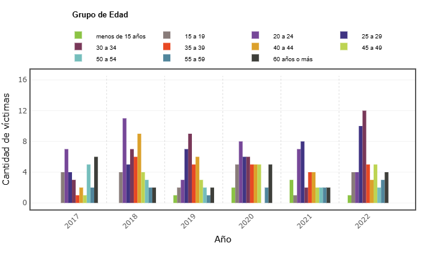
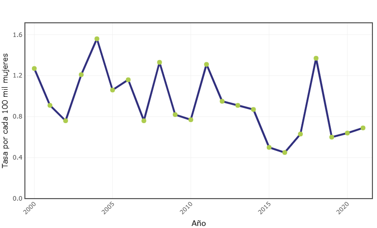

Esta página se enfoca en presentar información sobre el maltrato a la mujer en Puerto Rico, presentando estadísticas y recursos a la disposición de personas que puedan estar enfrentando situaciones de pareja. De igual forma, intenta crear conciencia para crear ambientes seguros para la mujer. Por tal razón, es importante llevar el mensaje sobre estos temas desde el hogar estos valores deben ser inculcados en la juventud para desarrollar una nueva generación con empatía y madures emocional que no quieran resolver sus desamores arrebatándole la vida a su pareja. Aunque, el abuso de género ocurre tanto de parte de los hombres como de las mujeres es más predominante en que los hombres sean los que acuden al abuso y a despojarle de la vida a su pareja.
Puedes visitar cualquiera de las organizaciones presentadas en la página y ayudar donando artículos de aseo, ropa, higiene personal o dinero.
Conviertete en voluntario en cualquiera de las organizaciones y se parte del cambio para el bien
| Estadísticas de homicídios de mujeres entre 2017 a 2022 |
|---|
|  |
| Tasa de feminicidio por violencia doméstica |
|---|
|  |